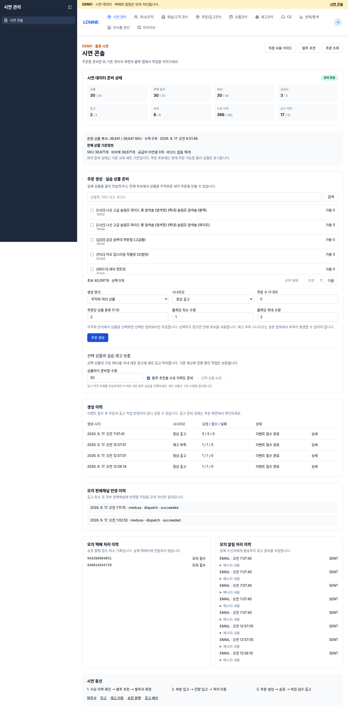

OPERATOR GUIDE · DEMO
직원이 시작하기 전에
환경과 증거를 준비합니다
현재 배포 기능과 새 콘솔 예정 기능을 구분하고, 작업 ID와 장비 결과를 끝까지 남깁니다.
AUTHORITY & BOUNDARY
안내자는 준비하고, 직원은 업무 경로로 처리합니다
안내자
- 시연 데이터 준비 상태 확인
- 정상/부족 주문 생성
- 고정 SKU·시작 수량 배정
- 작업 ID와 결과 수집
리테일·물류
- 발주·입고·적치·출고 실행
- 자기 역할 화면에서 결과 확인
- 정확한 식별자로 인계
- 미확정 결과 재확인
금지
- live 환경에서 교육
- 기존 직원 작업 삭제
- DB 전체 초기화
- 미확정 성공을 새 작업으로 우회
인증된 가이드 진입점 · 관리자 로그인 뒤 /demo/guide/index.html을 엽니다. demo 주문 생성은 안내자 역할이며, 직원용 작업자 계정이 demo 관리 API를 호출하지 못하는 것은 정상 경계입니다.
CURRENT CONSOLE · 2026.09.17
전체 카탈로그에서 여러 상품을 골라 준비합니다

전체 기준정보
운영 상품 39,641/39,641 · 누락 0
SKU 39,671 · 비삭제 39,671
공급처 미연결 0 · 바코드 없음 19
주문 후보 40,097개
기본 주문 입력
생성 방식 무작위 여러 상품
주문 수 5 · 상품 종류 2
품목당 수량 1–3
상품마다 보충 50
상단 30/30 readiness 배지는 기본 교육 세트 기준입니다. 전체 카탈로그 수는 바로 아래 전체 상품 기준정보에서 별도로 확인합니다.
READINESS GATE
“준비 완료” 배지만 보지 말고 항목별로 확인합니다
교육 시작 가능
- 요구 수량 이상의 상품·판매 옵션·SKU
- 선택 공급처와 목적지 창고
- 입고대기·보관·출고 위치
- 정상 주문에 필요한 가용 재고
- 부족 실습용 부족 상태
추가 확인
- 수요·납기 이력이 기대 최소값 이상
- 선택 SKU의 공급처 관계
- 판매 variant와 SKU 연결
- 바코드·포장단위와 장비 카드
- 배송 프로필이 demo 모의 처리
숫자가 많다고 모든 SKU가 실습 가능한 것은 아닙니다. 조회·발주·입고/적치/이동·주문/출고 능력을 선택 SKU마다 확인합니다.
CURRENT CONSOLE WORKFLOW
현재 콘솔에서 주문을 만들고 결과를 확인합니다
- 실습 상품 검색에 상품명, SKU 또는 바코드를 입력하고 검색을 누릅니다.
- 생성 방식에서 무작위 여러 상품 또는 선택한 상품을 고릅니다.
- 주문 수 · 주문당 상품 종류 · 품목당 최소/최대 수량을 입력합니다.
- 주문 생성을 한 번 누릅니다.
- 확인할 주문 요청이 보이면 같은 요청 재확인을 누릅니다.
- 생성 이력의 상세에서 주문 링크를 열고 주문과 출고 준비를 확인합니다.
이벤트 접수 완료 ≠ 주문/출고 준비 완료. 화면 문구대로 반영까지 시간이 걸릴 수 있습니다. 상세와 주문 화면을 확인한 뒤 물류에 넘깁니다.
물류에 넘길 값
생성 요청 시각
시나리오
주문번호
shipment ID
운송장번호
창고 / 품목 / 수량
WORK ID DISCIPLINE
작업 묶음마다 식별자 사슬을 남깁니다
준비 요청준비 작업 ID
SKU · 시작 수량
SKU · 시작 수량
발주발주번호
실발주 · 예정일
실발주 · 예정일
입고·적치입고 라인/작업 ID
4 + 6 · 위치
4 + 6 · 위치
주문생성 요청 ID
주문번호
주문번호
출고shipment · 송장
완료 시각
완료 시각
| 검증 흐름 | 실제 acceptance 식별자 | 결과 |
|---|---|---|
| 발주·입고 | SKU 58005 · PO 6f59ecb3-2178-4670-a78f-352a67728ec8 | 4 + 6 · 남음 0 |
| 입고 작업 | f3ad9d35-c8dd-493b-8c55-3f06bda69d25 55bc5176-480c-470c-b1e5-a6d90c6bcede | 둘 다 적치 완료 |
| 정상 다상품 | request = run e481f735-e8d0-457b-a928-887c423ca022 shipment 6ff41275-cf3d-4f4a-9df7-463fdb9fb052 | 5건 × 2종 · 송장 983197548424 |
| 부족 → 보충 | restock 51d53f19-e6a7-4fad-bea2-bdc036a70229 shipment 7d1caf4d-3ab0-469a-a5ae-e1c8779b40bc | 예약 성공 · 송장 946914947774 |
Acceptance passed · 2026-09-17 07:14 KST · shipped / dispatched / channel succeeded / carrier registered / mock notification SENT.
NEW CONSOLE · DEPLOYED
새 콘솔의 정확한 레이블과 기본값입니다
주문 생성 · 실습 상품 준비
- 실습 상품 검색 · “상품명, SKU 또는 바코드”
- 생성 방식 · 기본 무작위 여러 상품
- 주문 수 5 · 주문당 상품 종류 2
- 품목당 최소/최대 수량 1 / 3
- 선택 상품이 있으면 그 범위, 없으면 전체 후보
- 미확정 요청은 같은 요청 재확인
선택 상품의 실습 재고 보충
- 상품마다 준비할 수량 기본 50
- 발주 추천용 수요 이력도 준비 선택
- 선택 상품 보충은 실제 입고+적치 경로 사용
- 세트 상품은 구성 수량 합산
- 기존 재고와 진행 중 작업 보존
- 미확정 보충은 보충 요청 재확인
발주 추천 체험: 재고 없는 상품은 준비 수량 1과 수요 이력 선택으로 시작합니다. 재고가 충분하면 초기화하지 말고 다른 상품을 고르거나 출고 후 재확인합니다.
DB·배포 확인 · source SKU 39,641 + 기존 demo 30 = demo 39,671, 누락 0 · 삭제 상태 차이 0. readiness와 전체 상품 후보 응답을 실제 화면에서 확인했습니다.
업무 acceptance 통과 · 5건 × 2종 주문은 같은 request ID 재시도에서 동일했습니다. 정상/부족 주문 모두 보충·예약 뒤 피킹·포장·검수·모의 출고까지 완료했습니다.
REPEAT WITHOUT RESET
반복 실습은 “보충”하고, 작업을 지우지 않습니다
기본 교육 세트
고정 SKU·수요·납기와 10개 / 4+6 흐름을 재현 가능하게 준비.
선택 상품 연습
선택 SKU의 공급처·바코드·위치·판매 연결을 확인하고 필요한 업무 데이터를 준비.
자유 실습 보충
새 입고/보충 업무로 재고를 더하며 원장·예약·집계의 일관성을 보존.
허용 원칙
- 기준정보 갱신과 실습 이력 분리
- 새 준비 작업의 멱등성 확인
- 완료·미완료 기존 작업 보존
- 시작 수량과 증가분 보고
금지 원칙
- DB 전체 초기화
- 미완료 주문·발주 삭제
- 현재 수량을 무조건 기준값으로 덮어쓰기
- seed 재실행을 재고 충전으로 안내
PHYSICAL ACCEPTANCE
Windows · 스캐너 · 프린터를 한 묶음으로 인수합니다
| 항목 | 실행 | 통과 기준 | 증거 |
|---|---|---|---|
| 설치 | 지원된 Windows 산출물 설치/실행 | 서명·경고·버전 기록, 앱 시작 | 파일명·해시·Windows 버전 |
| 로그인 | WMS Login → 브라우저 인증 | callback 뒤 앱 복귀, 세션 유지 | 시각·계정 역할·화면 |
| HID | 낱개/박스/위치/송장 스캔 | 원문 1회 + Enter 1회, 포커스 정상 | 모델·설정·읽힌 값 |
| 프린터 | 송장/시험 라벨 출력 | 방향·여백·농도·재스캔 성공 | 모델·드라이버·용지 규격 |
| 재시작 | 진행 중 작업에서 앱 재시작 | 이어서 작업/재확인, 이중 반영 0 | 작업 ID · 전후 수량 |
빌드 확인: LCNINE Logistics Demo_0.1.0_x64-setup.exe · SHA-256 ff59e4b0…14bb6f76. 설치 파일은 안내자가 별도 전달합니다. 지정 PC·장비 실물 결과가 나오기 전에는 특정 드라이버·용지 설정값을 고정하지 않습니다.
INCIDENT PACKET
장애 보고는 재현 가능한 한 묶음으로 남깁니다
발생 시각 / 환경 / 버전
계정 역할 / 선택 창고
발주·주문·shipment·송장
SKU / 바코드 / 위치
시작·입력·처리·남은 수량
마지막 조작 / 화면 문구
다시 확인 결과
스크린샷 / 로그 위치
현장에서 먼저 할 일
- 추가 입력을 멈춥니다.
- 정확한 화면 문구와 시각을 기록합니다.
- 다시 확인 / 처리 내역 확인이 있으면 한 번 사용합니다.
- 현재 서버 상태와 원장 수량을 대사합니다.
- 새 작업은 기존 결과가 확정된 뒤에만 만듭니다.